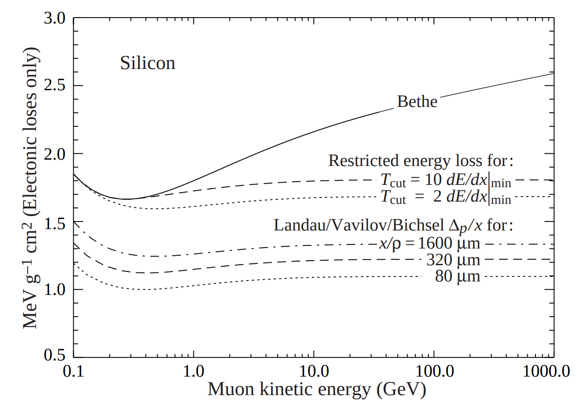
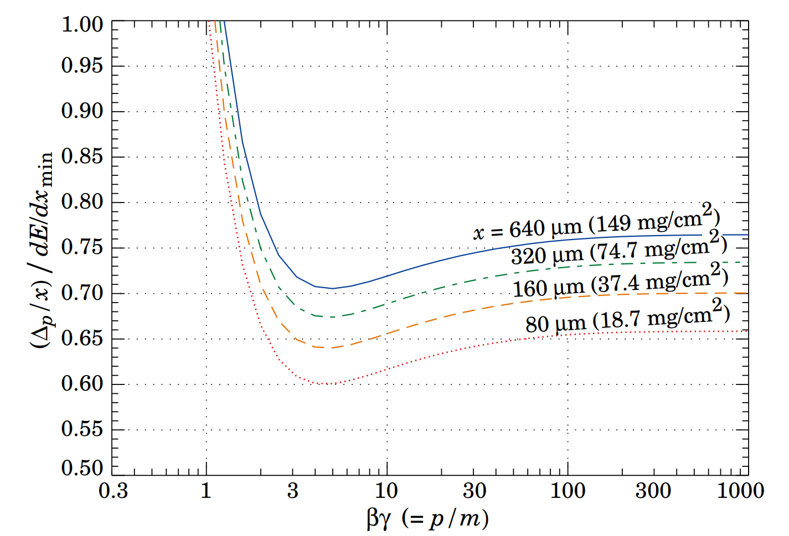

Procedure
For a more detailed explanation, please read this document Lots of useful information can also be found at this link.
[info] Info For further information, especially related to the TDR geometry that is being delivered in July 2018, refer to this talk.
The rechits coming out the detector electronics have a magnitude measured in femtoCoulomb (fC) corresponding to the energy desposited in the active thickness of the Si sensor cells. The calibration procedure will start from those hits and produce calibrated rechits that can be used for clustering purposes (hence energy measurements). There are 3 steps involved in the calibration procedure:
Equalization of the signal scale to account for the three Si sensor thicknesses (3 constants)
Equalization of the signal scale to account for the differing absorber thicknesses in the 52 layers of HGCAL (52 constants)
Setting the overall scale such that when the signals in a shower are added, their sum is a good estimate of the energy of the incoming particle which caused the shower (1 constant)
These steps are detailed below.
Rescaling to MIPs
In a sampling calorimeter with varying thicknesses of absorber, the energy samplings must be reweighted to account for the different absorber thicknesses. The actual energy deposited in the sensitive detectors is proportional but not identical to the original energy of the incoming particle.
It is generally agreed that for this purpose the thickness should be measured in terms of ()(i.e. one uses the integrated energy loss for a MIP in a layer of absorber). This can be considered as being due to the fact that the dominant energy absorption process in the shower is ionization.
The first step consists of taking the value in fC coming out of the ADC and convert it into average number of MIPs, where the conversion factor is the most probable value of the Landau distribution for a MIP in Si, computed for the 3 different sensors' thickness. On the advantages of using the most probable value, as can be seen in the pictures below, is that it is rather stable as a function of the incoming particle energy: this is definitely not true for the .
The following figures, taken from the PDG document linked in the reading section, help understanding the situation better:
 
Currently (june 2018, 22:55:15 (UTC+0200)) the fCperMIP values are:
| Si Thickness [] | fCperMIP [] |
|---|---|
| 100 | 1.25 |
| 200 | 2.57 |
| 300 | 3.88 |
Re-weighting for absorber thickness
Let's assume now that is the number of equivalent MIPs in the i-th sensitive(active) layer. This number is simply:
where the amplitude in the i-th active layer is given by:
and is expressed in fC. The term is usually computed dividing the full range of the input analogue signal (dynamic range) by the total amount of (signal) bits available. Those numbers are configuration parameters in release.
We can also safely assume that the average number of MIPs in the i-th passive layer (i.e. in the i-th absorber) is the mean between and , i.e. the mean between the preceding active layer () and the subsequent one ().
The total energy lost in the i-th passive layer is then:
where
The total energy lost in the shower is:
This could be rewritten as (boundary conditions at first and last layer to be checked and carefully handled):
We measure the terms:
in MeV, i.e. multiply the [] of the absorber material by its thickness [].
[warning] Warning The above calculation works great for orthogonally incident particles, which is never the case we face in reality. The assumption we do is that the value will scale in the same way as the parameter, i.e. with the of the incident angle. This is quite true but not exactly correct.
Eventually, all energies are converted into to comply with the official CMS units convention.
Shower energy scale
The final step is to scale the rechit magnitudes so that their sum approximately represents the energy deposited by an electromagnetic shower. We choose to make the sum of all rechits with equal to the true incident photon energy.
Software Implementation
What has been described in the previous section has been implemented into CMSSW. There are few steps to run in order to convert the digital signal received from the electronics (in ADC counts) into a calibrated hit. These are documented in the following sections.
Uncalibrated RecHits
The C++ module responsible for the creation of the un-calibrated rechits
is
HGCalUncalibRecHitProducer,
configured with the python label HGCalUncalibRecHit. The main goal of this
module is to convert the input HGCAL Digis, which are measured in ADC count,
into rechits whose amplitude is expressed in terms of average number of MIPs.
The module is also configured so that it can dynamically convert ADC counts into
a real amplitide, measured in , which is then normalised to MIP,
depending on the thickness of the sensor. Internally, all the heavy lifting is
done by a plugin, acting as a worker. The plugin to load is specified in the
configuration itself and is dynamically loaded following the standard procedure
in cmssw. The currently (29 june 2018, 12:09:21 (UTC+0200)) configured
plugin/worker is
HGCalUncalibRecHitWorkerWeights.
Under the hood, one level deeper, the module that is responsible of making this
conversion is
HGCalUncalibRecHitRecWeightsAlgo<HGCHEDataFrame>
via the makeRecHit method.
[info] Info The takeway message is that the product produced by the
HGCalUncalibRecHitProduceris a collection of HGCal un-calibrated rechits (edm::SortedCollection<HGCUncalibratedRecHit>) whoseamplitudemethod will result in the average number of MIPs corresponding to the measured signal for that specific Silicon detector.
This implements the rescale section.
Calibrated RecHits
The C++ module responsible for the creation of the calibrated rechits is
HGCalRecHitProducer
configured with the python label HGCalRecHit. Also in this case, all the
heavy lifting is internally done by an external plugin, loaded using the
canonical cmssw mechanism, and configured via python. The currently
(29 juin 2018, 14:29:44 (UTC+0200)) configured plugin is
HGCalRecHitWorkerSimple.
The plugin will loop over all the input collection (EE, FH and BH uncalibrated
rechits, separately), and call the run method of its own configured
plugin/worker. The worker itself will outsource much of its duties to another
C++ object:
HGCalRecHitSimpleAlgo.
The main plugin will read the weights for each single layer from the
configuration file and pass them down to its internal worker. This will read
each hit, one by one, determine to which layer is belongs to and rescale its
amplitude by the weights, eventually converting it from
to . This step is implementing the equation:
where the input weights are, in fact, the factors:
as derived directly from the Geant4 simulation.
Final Energy Scale
Currently the final calibration energy has been implemented only at
particleFlow level, in particular only in the context of realistic
SimClusters, which are the truth-based reconstruction of HGCAL that is feed
into Particle Flow. The C++ module that is responsible of the creation of the
realistic SimClusters and of their validation is PFClusterProducer with the
python label particleFlowClusterHGCal. The python configuration of the module
contains 2 sets of eta-binned energy corrections, one for egamma objects and
one for hadronic objects.
[warning] Warning At present this distinction is guaranteed by the fact that this step is derived from Monte Carlo truth information. In the real life either we need to find a unique set of constants or, better, find a fully reconstruction based way to distinguish between the 2 types.
Also in this case, most of the heavy lifting is done by an external worker
loaded via the usual cmssw plugin mechanism. This is
RealisticSimClusterMapper.
The output of this module is a collection of PFClusters that will have the
energy set to the uncorrected one, and the correctedEnergy set to the
corrected one.
[danger] Danger The
PFClusters derived from theMultiClusterswill not have this final calibration applied.
Configuration files
Useful numbers
- The density of Silicon is 2.328
- The value of is 1.664 , i.e., 3.88 (i.e. )
- The energy required to create an e-h in Silicon is
- The most probable energy loss value for in Silicon (it can be extracted from the plots in the Rescaling to MIPs) section is . Rescaled for the thickness, we have .
- If we consider the energy needed to create an and the charge of the electron, we deduce that the corresponding factor is: , not far away from the quoted value of